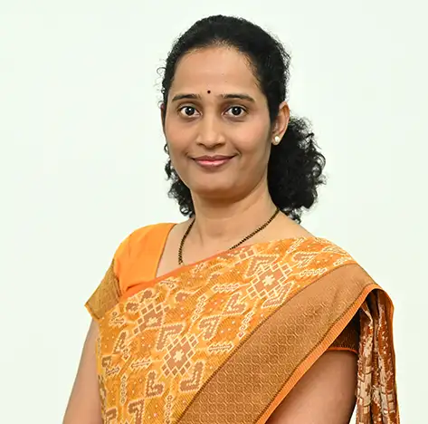

Dr. Rupali Sandip Kute
Assistant Professor

Assistant Professor
Dr. Rupali Kute is an accomplished assistant professor at the School of Electronics and Communication. She completed her undergraduate studies at the Maharashtra Institute of Technology and earned her master's and doctorate degrees in electronics and communication from the College of Engineering Pune and SPPU Pune, respectively. Dr. Kute has published numerous papers in prestigious journals and book chapters, and presented several research papers at national and international conferences. She also holds two Austrian patents and has recently completed a consulting project on "AI-based retail product detection and identification for unmanned vending machines." Her research interests are primarily in image reconstruction, machine learning, and object detection using deep learning. At the school level, she has held various administrative responsibilities, including project coordinator and final year coordinator. She is currently in charge of managing research activities and has also conducted a workshop on data science and visualization for students. Her teaching expertise includes machine learning, data science, data structures and algorithms, digital signal processing, Python programming, and R programming.
Computer Vision, AI ML
Profiles